Selected Guest-Edited Journal Issues
Journal collections guest-edited or co-edited by Frédéric Magoulès. Each notice identifies the editors, journal, publication period and bibliographic details.
2017
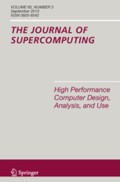
Embedded Multicore Computing and Applications
Guest editors: Che-Lun Hung, F. Magoulès, Meikang Qiu, Robert C. Hsu and Chun-Yuan Lin.
Publication: The Journal of Supercomputing · Springer · 2017 · 73(8), 3327–3578.
ISSN: 0920-8542; 1573-0484.
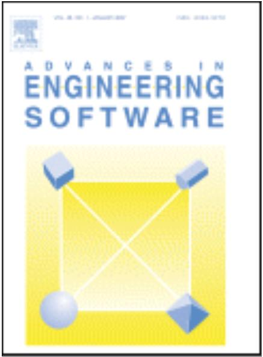
Advances in High Performance Computing: On the Path to Exascale Software
Guest editors: F. Magoulès, Mark Parsons and Lorna Smith.
Publication: Advances in Engineering Software · Elsevier · 2017 · 111, 1–58.
ISSN: 0965-9978.
2016
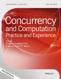
Embedded Multicore Computing and Applications
Guest editors: F. Magoulès, Che-Lun Hung, Hai Jiang and Jia Hu.
Publication: Concurrency and Computation: Practice and Experience · Wiley · 2016 · 28(16), 4209–4364.
ISSN: 1532-0634.
2015
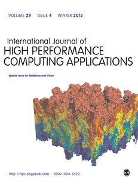
Innovative Algorithms for Extreme Scale Computing
Guest editors: F. Magoulès, Mark Parsons and Lorna Smith.
Publication: International Journal of High Performance Computing Applications · SAGE · 2015 · 29(3), 247–319.
ISSN: 1094-3420; 1741-2846.
2009
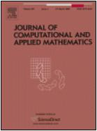
Special Issue in Honor of Professor Hideo Kawarada on the Occasion of His 70th Birthday
Guest editors: Takashi Kako, F. Magoulès and Hiroshi Suito.
Publication: Journal of Computational and Applied Mathematics · Elsevier · 2009 · 232(1), 1–148.
ISSN: 0377-0427.
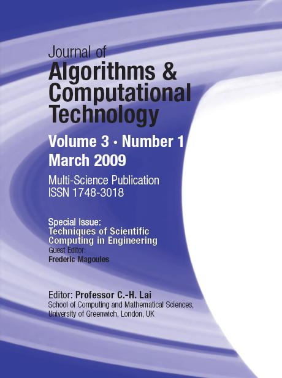
Techniques of Scientific Computing in Engineering
Guest editors: F. Magoulès.
Publication: Journal of Algorithms and Computational Technology · Multi-Science Publishing · 2009 · 3(1), 1–178.
ISSN: 1748-3018.
2008
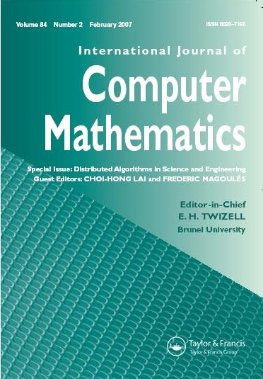
Innovative Algorithms in Science and Engineering
Guest editors: F. Magoulès and Choi-Hong Lai.
Publication: International Journal of Computer Mathematics · Taylor & Francis · 2008 · 85(10), 1471–1607.
ISSN: 0020-7160; 1029-0265.
2007
Distributed Algorithms in Science and Engineering
Guest editors: Choi-Hong Lai and F. Magoulès.
Publication: International Journal of Computer Mathematics · Taylor & Francis · 2007 · 84(2), 151–272.
ISSN: 0020-7160; 1029-0265.
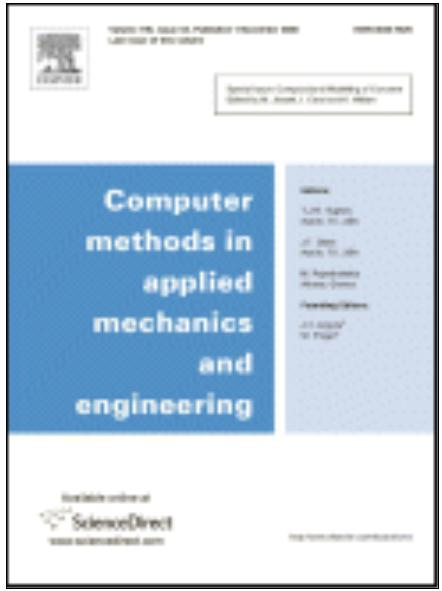
Domain Decomposition Methods: Recent Advances and New Challenges in Engineering
Guest editors: F. Magoulès and Daniel Rixen.
Publication: Computer Methods in Applied Mechanics and Engineering · Elsevier · 2007 · 196(8), 1345–1622.
ISSN: 0045-7825.
High Performance Computing in Science and Engineering
Guest editors: F. Magoulès and Barry Topping.
Publication: Advances in Engineering Software · Elsevier · 2007 · 38(5), 285–346.
ISSN: 0965-9978.
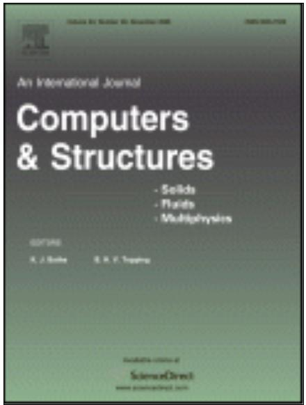
High Performance Computing for Computational Mechanics
Guest editors: F. Magoulès and Barry Topping.
Publication: Computers & Structures · Elsevier · 2007 · 85(9), 487–562.
ISSN: 0045-7949.
2006
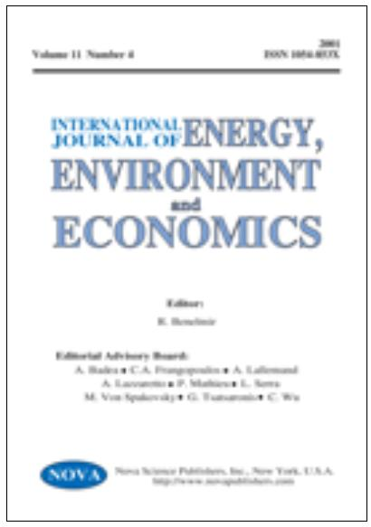
Techniques of Scientific Computing for Energy and Environment
Guest editors: F. Magoulès and Riad Benelmir.
Publication: International Journal of Energy, Environment and Economics · Nova Science Publishers · 2006 · 13(2), 1–96.
ISSN: 1054-853X.
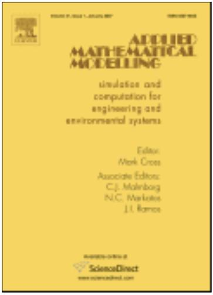
Parallel and Distributed Computing for Computational Mechanics
Guest editors: F. Magoulès and Choi-Hong Lai.
Publication: Applied Mathematical Modelling · Elsevier · 2006 · 30(8), 675–764.
ISSN: 0307-904X.
Parallel and Vector Processing in Science and Engineering
Guest editors: F. Magoulès and Choi-Hong Lai.
Publication: Applied Mathematical Modelling · Elsevier · 2006 · 30(7), 561–674.
ISSN: 0307-904X.
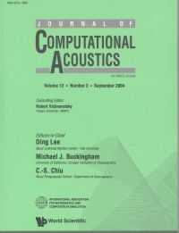
High Performance Computing for Wave Propagation
Guest editors: F. Magoulès.
Publication: Journal of Computational Acoustics · World Scientific · 2006 · 14(1), 1–141.
ISSN: 0218-396X; 1793-6489.
Absorbing Boundary Conditions
Guest editors: F. Magoulès and Isaac Harari.
Publication: Computer Methods in Applied Mechanics and Engineering · Elsevier · 2006 · 195(29–32), 3551–3902.
ISSN: 0045-7825.
2005
Innovative Computational Methods for Wave Propagation
Guest editors: F. Magoulès.
Publication: Journal of Computational Acoustics · World Scientific · 2005 · 13(3), 403–568.
ISSN: 0218-396X; 1793-6489.